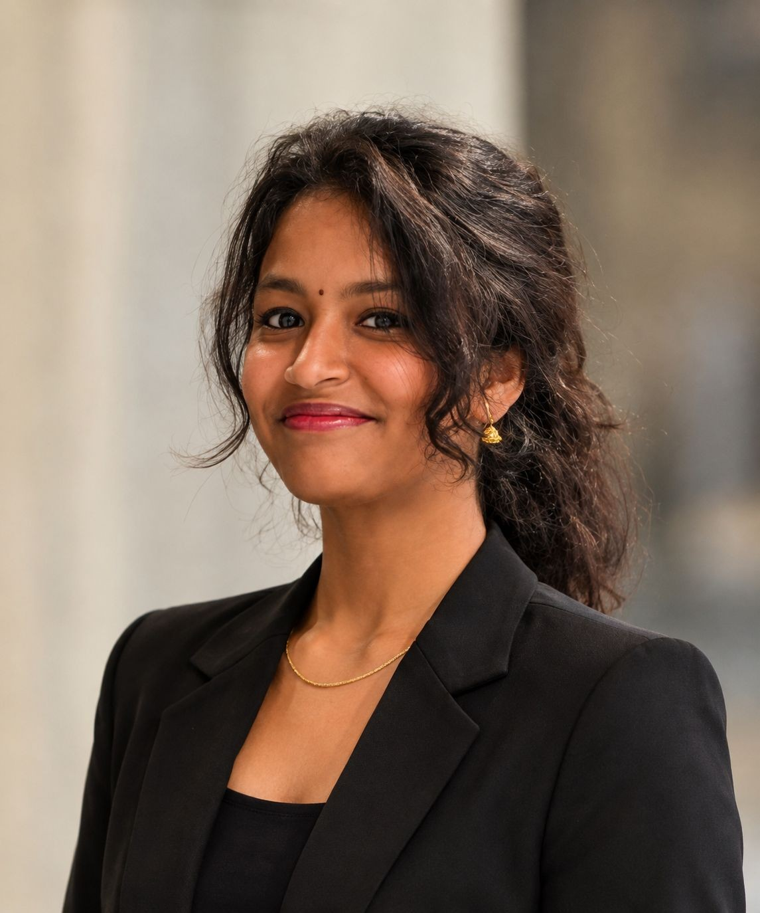
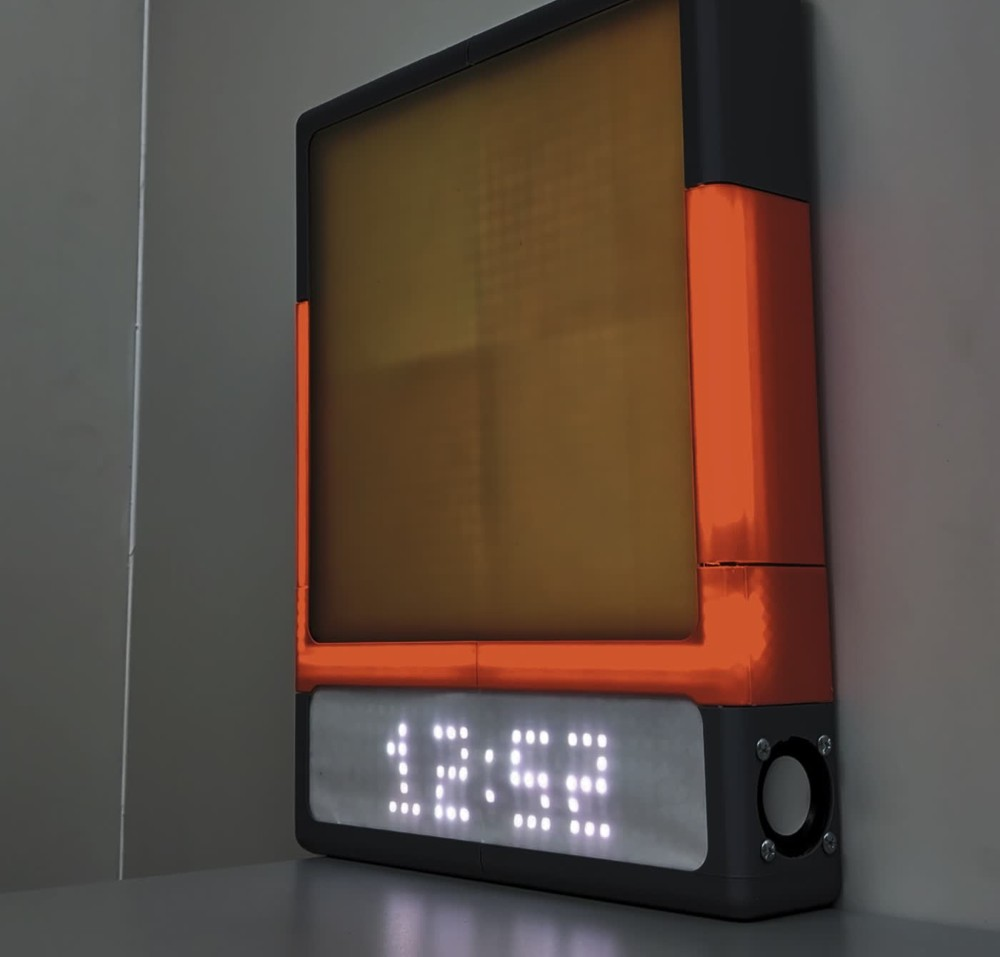
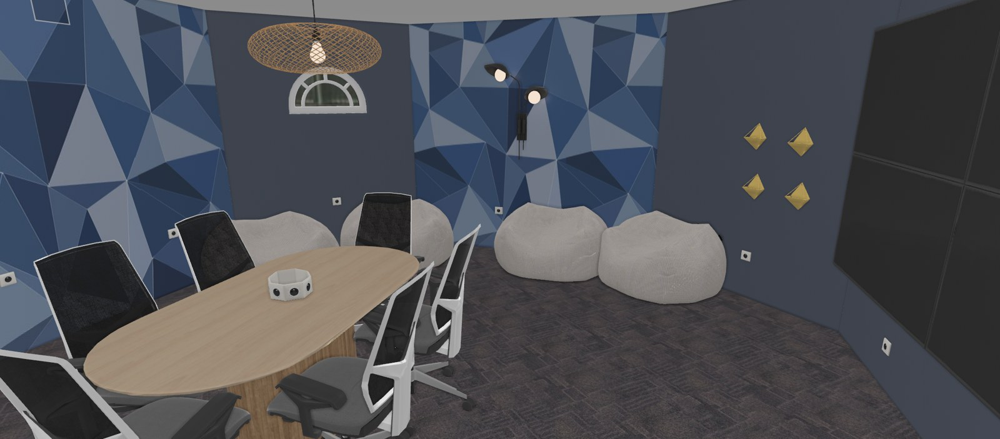
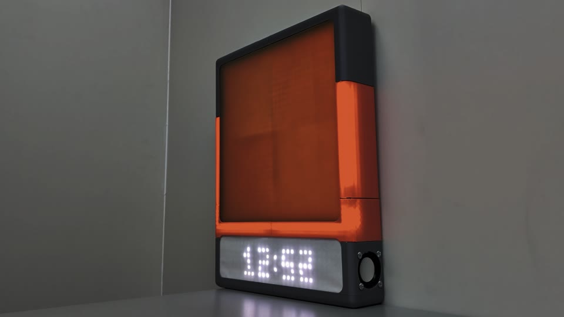

Engineering Design Portfolio
Kriti Rampalli
I'm an Industrial Engineering student at Penn State with a minor in Engineering Design, graduating December 2026. I'm drawn to the moments where a product or system frustrates the person using it, and I like tracing the problem to its cause and designing a fix that feels obvious in hindsight. That approach shaped my work on a ground control display for a solar-powered UAV and my capstone with the ARM Institute. I'm looking to join an engineering design team where systems thinking and user-centered design work together.

Designer statement
Ambiguity in ideation, clarity before implementation
Early in a project I want to throw every idea at the wall, including the impractical ones. Before I commit to building, I need to understand the requirements, constraints, resources, dependencies, and which parts of the system belong to me.
Then I want the design challenged. A user misunderstanding an interface, a test that fails, or a requirement that changes is useful evidence. My goal is not to protect my first idea. It is to understand the problem well enough that when the design changes, I can explain exactly why.
Across Projects
Spatial, product, software and manufacturing work, each with a rejected alternative, a real limitation and a lesson I would carry into the next project.
Selected work
Projects

Aurora
A sunrise-simulating wall art alarm clock with weather and ambient lighting. I designed and tested the mobile interface (17 testers).
View project →
Modular Study Pod
A digitally prototyped group study room for long engineering work sessions, reshaped over four iterations by student feedback.
View project →Health Monitoring Display
A Linux-native monitoring interface that turns raw system data into decision-ready information for UAV operators. Presented to the client as built.
View project →Multi-Roll Tape Dispenser
Work in progressA 3D-printed multi-roll tape dispenser designed under restrictive design-for-additive-manufacturing rules. Work in progress.
View project →
Aurora Pitch Film
A 2-minute pitch film I wrote, directed, shot, acted in and edited.
Watch the film →